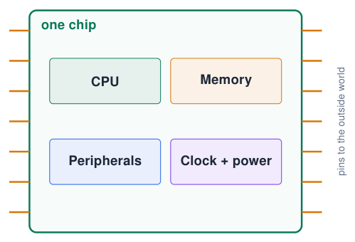
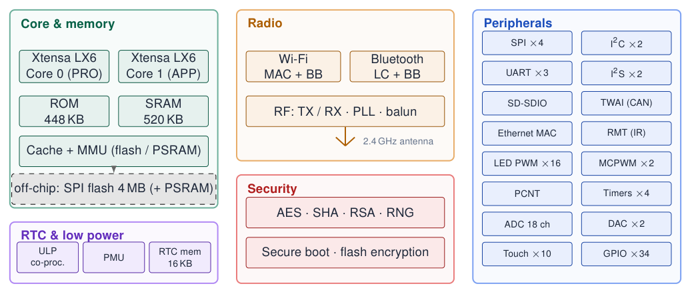
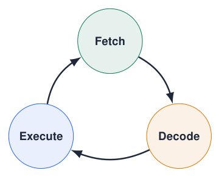
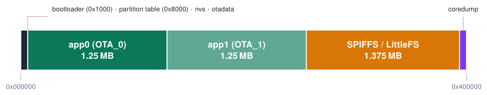
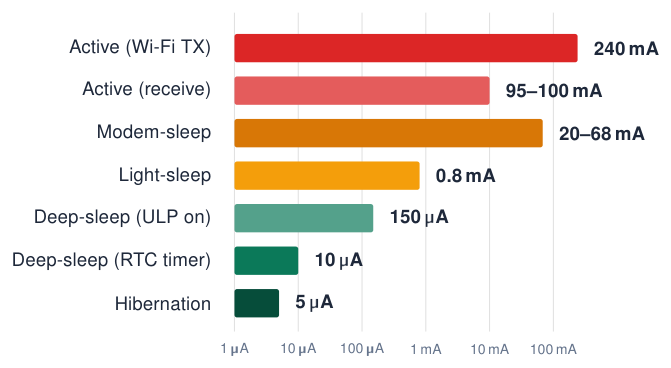
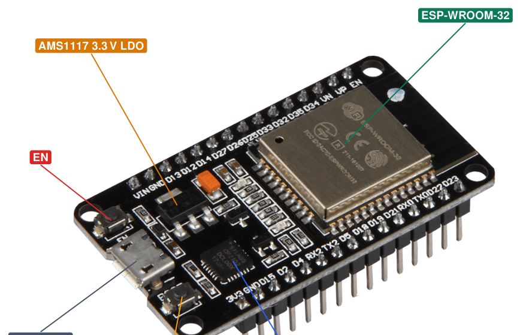

Architecture¶
What is a microcontroller?¶

-
A complete small computer on one chip: processor, memory, input/output and clock.
-
Built to control something: read sensors, drive actuators, communicate.
-
No screen, keyboard or operating system needed: it runs one program, directly on the hardware.
-
Found everywhere: washing machines, cars (50–100 per car), toys, thermostats.
PC vs microcontroller
PC: GHz, gigabytes, many programs. MCU: MHz, kilobytes, one job, milliwatts, starts in milliseconds.
Functional block diagram¶

Sources: Adapted from the ESP32 Series Datasheet ESP32 Series Datasheet
The CPU: fetch, decode, execute¶

-
Fetch the next instruction from memory.
-
Decode: what operation, which registers?
-
Execute: add, compare, load, store, jump…
-
240 MHz = 240 million clock ticks per second; simple instructions take 1 tick.
-
One line of C may become several instructions.
-
32-bit CPU: works on 32-bit numbers in one step.
How fast is fast?
A digitalWrite() takes about 0.1 μs; a delay(1) wastes \(\approx\) 240 000 clock ticks.
CPU and memory¶
Two Xtensa LX6 cores
-
PRO_CPU (core 0): Wi-Fi / BT stacks and system tasks.
-
APP_CPU (core 1): runs
setup()andloop()in Arduino. -
Up to 240 MHz (also 160 / 80 MHz to save power), 600 DMIPS.
-
ULP co-processor: tiny core that runs while the main CPUs sleep.
Memory
-
448 KB ROM: boot loader + core functions.
-
520 KB SRAM (data + instructions).
-
16 KB RTC memory: survives deep sleep (
RTC_DATA_ATTR). -
External SPI flash (4 MB in WROOM-32), executed through a cache (XIP).
-
Optional PSRAM (WROVER modules).
-
1 Kbit eFuse: MAC address, keys, chip config.
Sources: ESP32 Series Datasheet; ESP32 Technical Reference Manual
Memory types: capacity, purpose and retention¶
The course board uses several memories for different jobs.
Chip SRAM, module flash and free heap are different quantities; only part of SRAM is free for your application.
Sources: Classic ESP32 and WROOM-32 capacities ESP32 Series Datasheet; ESP32-WROOM-32 Datasheet, Version 3.8
Inside RAM: globals, stack, heap and instructions¶
Different uses of the same working memory
-
Global/static data: exists for the entire run; not recreated on every function call.
-
Stack: function calls and ordinary local variables; automatically reclaimed on return.
-
Heap: dynamically allocated buffers and objects, including storage used by
String.
ESP32 names you will encounter
-
DRAM means Data RAM in ESP32 documentation: RAM used for data.
-
IRAM means Instruction RAM: RAM used for executable code, including suitably placed ISRs.
-
These are uses/mappings of internal SRAM, not extra 520 KB memories.
Why less memory is free than the headline capacity
The program, caches, buffers and system libraries already occupy memory. A large local array uses stack space; a large dynamic buffer consumes heap. Neither increases the physical RAM capacity.
Sources: Memory allocation and IRAM/DRAM terminology ESP-IDF Programming Guide: Memory Types (ESP32)
Which memory should hold this value?¶
NVS, filesystems and EEPROM are not extra memory chips
NVS and LittleFS share the flash capacity. The classic ESP32 has no separate EEPROM block: use Preferences for small persistent settings. Save settings when they change, not on every loop.
Sources: Memory types and persistent storage ESP-IDF Programming Guide: Memory Types (ESP32); Arduino ESP32: Preferences Library
Flash vs RAM: where does what live?¶
Analogy
Flash is the book on the shelf; RAM is the notepad on your desk: fast, but wiped when you leave.
Compiler output
After Verify the IDE prints how much flash (“program storage”) and RAM (“dynamic memory”) your sketch uses.
Flash layout: the default partition table (4 MB)¶

app0 / app1
Two firmware slots allow OTA updates: write the new image to the idle slot, then switch.
nvs
Non-volatile key/value store used by Preferences and the Wi-Fi driver.
SPIFFS / LittleFS
File system for HTML pages, configs, logs. Choose another scheme in Tools \(\rightarrow\) Partition Scheme.
Sources: Arduino ESP32 Core Documentation
Peripherals: hardware that works for you¶
-
A peripheral is a dedicated hardware block next to the CPU: UART, I2C, SPI, PWM, ADC, timers …
-
The CPU only configures it; the peripheral then runs in parallel.
-
Example: a PWM channel keeps an LED dimmed while your code does something else.
-
Peripherals signal events to the CPU with interrupts.
GPIO matrix
On the ESP32 most peripheral signals can be routed to almost any GPIO. That is why Serial2.begin(115200, SERIAL_8N1, 16, 17); lets you choose the pins.
Software vs hardware
“Bit-banging” (toggling pins in code) works, but costs CPU time and is less precise than a peripheral.
Sources: ESP32 Technical Reference Manual
Power modes¶

-
Log scale: 5 orders of magnitude between transmitting and hibernating.
-
Battery products spend most of their life in deep sleep.
-
Modem-sleep: CPU on, radio off between DTIM beacons.
-
Wake sources: timer, GPIO (ext0/ext1), touch, ULP.
Sources: Typical values, ESP32 Series Datasheet ESP32 Series Datasheet; ESP-IDF Programming Guide: Sleep Modes (ESP32)
Inside the DevKit V1 board¶

-
Module: ESP32 chip + 40 MHz crystal + 4 MB flash + PCB antenna under a shield.
-
USB–UART bridge (CP2102 or CH340): programming +
Serial. -
LDO: 5 V (USB / VIN) \(\rightarrow\) 3.3 V.
-
EN: reset button. BOOT: holds GPIO0 LOW \(\rightarrow\) download mode.
-
On-board LED on
GPIO2.
Sources: ESP32-WROOM-32E & ESP32-WROOM-32UE Datasheet; ESP32 Hardware Design Guidelines
Quiz: architecture¶
-
Your program survives a power cycle, but a counter variable restarts at 0. Why?
Check your answer
The program is in flash (non-volatile); variables live in SRAM (volatile).
-
Which core runs
setup()andloop()in the Arduino core?Check your answer
Core 1 (APP_CPU); core 0 handles the Wi-Fi and Bluetooth stacks.
-
How many clock cycles does the CPU run during
delay(10)at 240 MHz?Check your answer
\(240 \cdot 10^6 \times 0.010 = 2.4\) million cycles, all wasted waiting.
-
Name two advantages of a hardware peripheral over bit-banging.
Check your answer
Runs in parallel with your code, precise timing, lower CPU load.